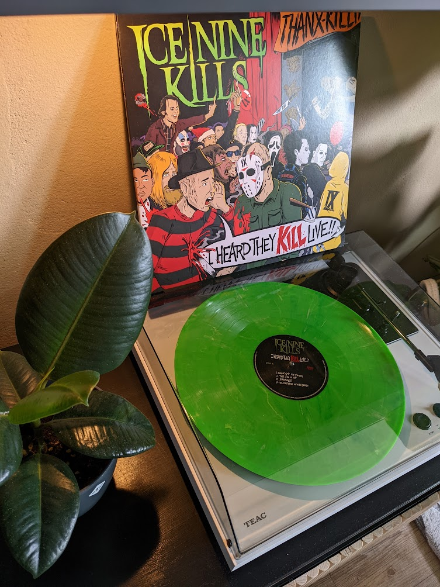

A live recording from one of my favorite bands, on vinyl
Music has a very special place in my heart. Ever since I was a little kid I loved to listen to music. That
passion never stopped. So naturally I had to go on concerts, right? Some might think that concerts are a waste
of time and money and to them I say: I don't care what u think. The experiences I made, goingt to every concert
I have been will stay in my head for a lifetime.